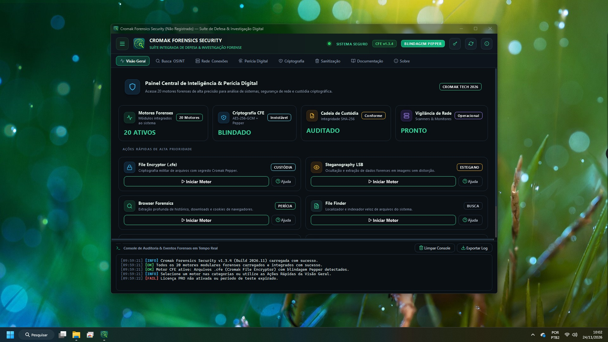
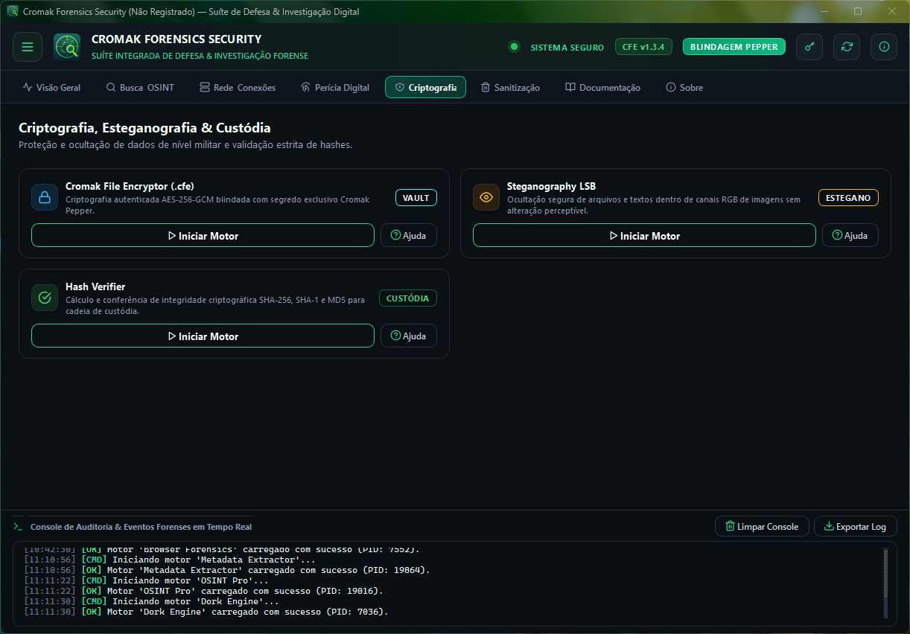
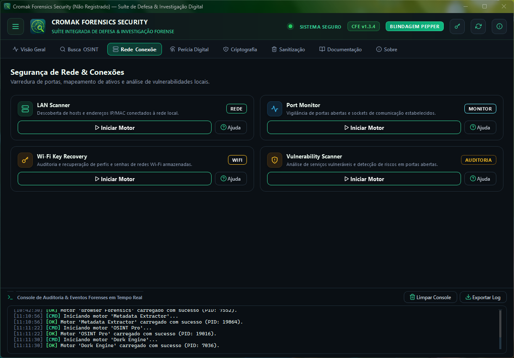
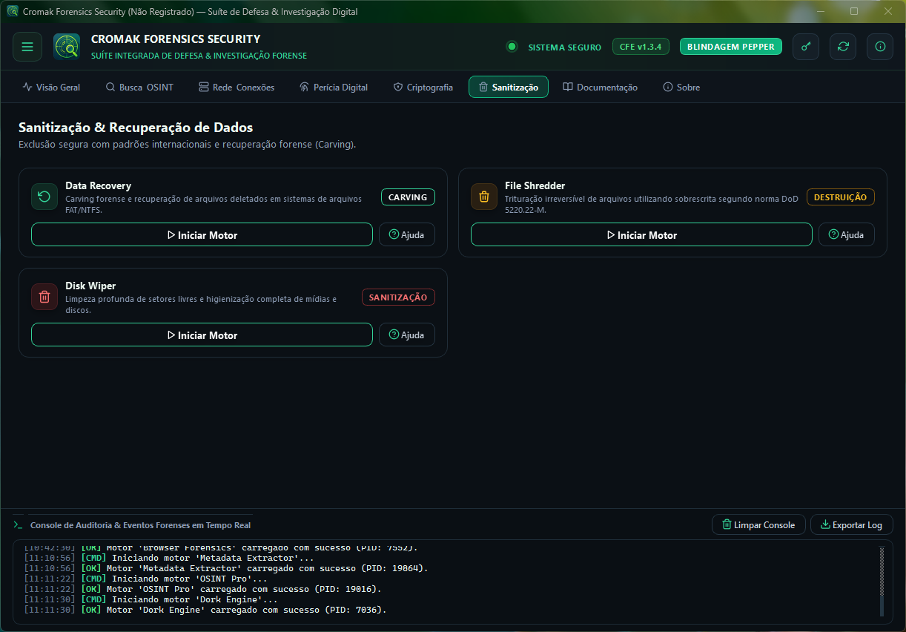

Cromak Forensics Security
The Definitive Suite for Computer Forensics, OSINT Investigation, Cyber Defense, and Evidentiary Custody.
Engineered by Cromak Technology for digital forensic examiners, cybersecurity researchers, SOC/CSIRT incident handlers, and corporate investigators. Unifies 20 independent modular engines in an ultra-responsive Dark Premium Emerald & Turquoise architecture. From deep artifact carving in Windows to authenticated military-grade encryption for court-admissible reports.

What is the .CFE Format with Pepper Shield?
The .cfe (Cromak File Encryptor) container was specifically engineered to fulfill the most demanding requirements of forensic secrecy and tactical cyber defense. Unlike ordinary encryptors that simply derive a key from user input, the CFE core injects the Proprietary Pepper Secret — a high-entropy cryptographic pepper bound directly into the native binary kernel.
This shielding makes dictionary attacks and rainbow tables mathematically futile, even if an attacker seizes the ciphertext. Every .cfe file uses authenticated AES-256-GCM (AEAD) with a 96-bit CSPRNG initialization vector, PBKDF2-HMAC-SHA256 key derivation with 200,000 iterations, and a 16-byte authentication tag that immediately flags any tampering attempts.
| Cryptographic Property (.CFE) | Cromak Technology Shielding Specification |
|---|---|
| Main Cipher Algorithm | AES-256-GCM (Galois/Counter Mode) with built-in authenticated integrity (AEAD) |
| Proprietary Pepper Secret | 256-bit shield bound to core — Defeats external brute-force and weak password exposure |
| Key Derivation (KDF) | PBKDF2-HMAC-SHA256 with 200,000 iterations and unique 16-byte cryptographic salt per container |
| Initialization Vector (IV / Nonce) | 96 bits generated via OS Cryptographic Service Provider (CSPRNG) |
| Authentication & Anti-Tamper | 128-bit GCM Tag: any single-bit modification causes instant verification failure |
The Arsenal of 20 Integrated Forensic Engines
Every engine operates independently in modular isolation without cross-dependencies, guaranteeing zero structural contamination and absolute stability.
Cryptography & Custody
- File Encryptor (.cfe): Military-grade AES-256-GCM cipher with Pepper shielding.
- Steganography LSB: Forensic payload injection & extraction in lossless images with channel validation.
- Hash Verifier: Multi-algorithm hash generator with 7 simultaneous digests (SHA-256, SHA-512, MD5...).
System Digital Forensics
- Windows Artifacts: Deep triage of Prefetch, ShimCache, ShellBags, and USB history.
- Browser Forensics: Multi-browser extraction of history, downloads, and cookies across 5 browsers.
- Data Recovery: Forensic file carving and signature reconstruction for deleted evidence.
- File Finder: High-speed triage by magic bytes and cryptographic digests.
Network Surveillance & Telemetry
- Port Monitor: Real-time listening sockets, active connections, and PID process mapping.
- LAN Scanner: Subnet sweep, ARP resolution, MAC lookups, and device discovery.
- Vulnerability Scanner: Surface check for insecure protocols and open management ports.
- Wi-Fi Key Recovery: Instant audit and extraction of saved WLAN network profiles.
- Network Fixer: Diagnostic reset of DNS resolver cache, ARP tables, and TCP/IP stack.
OSINT Intelligence & Recon
- Dork Engine: Automated advanced search operator generator across Google & Bing.
- People Finder: OSINT intelligence on names, phone records, and public data leaks.
- Username Recon: Cross-platform digital footprint identification on dozens of platforms.
- Email Analyzer: Forensic header breakdown with SPF, DKIM, and DMARC verification.
Anti-Forensics & Military Sanitization
- Disk Wiper: Unrecoverable free-space sanitization following DoD 5220.22-M & Gutmann protocols.
- File Shredder: Irrecoverable cryptographic file destruction with pseudorandom pattern overwrites.
- Clipboard History: Sensitive memory cleanup and clipboard telemetry mitigation against info-stealers.
- Forensic Console: Real-time event auditing stream with timestamped event logging and TXT export.
Technical Comparison
Discover why Cromak Forensics Security is the benchmark in speed, integrity, and security.
| Capability / Feature | Cromak Forensics Security | Fragmented CLI Tools | Cloud Forensics / Subscriptions |
|---|---|---|---|
| Unified Modular Architecture | 20 Integrated Engines | 15+ Disconnected Scripts | Parcial (Bloated SaaS) |
| Encrypted Container with Pepper Shield | Exclusive .CFE Format | Standard Formats (ZIP/7z) | Third-party Cloud Storage |
| Air-Gapped Isolation / Zero Telemetry | 100% Offline by Design | Varies per Script | Mandatory Online Sync |
| Military Sanitization (DoD / Gutmann) | Native 35-Pass Engine | Requires external tools | Rarely included |
| Licensing Model | Lifetime PRO (No Subscriptions) | Free / Untracked | Heavy Recurring Fees ($$$) |
| Hardware-Bound Anti-Tamper (HWID) | Cryptographic Binding | Absent | Proprietary Dongles / Accounts |
Explore Forensics Security in Action
Authentic high-resolution captures showcasing the forensic modules in operation.

Central Intelligence & Digital Forensics Console
Global dashboard monitoring all 20 active engines, zero-telemetry status, Pepper cryptographic shield (.cfe), SHA-256 chain of custody, and real-time forensic event stream.

CFE Cryptography & LSB Steganography
Military-grade container encryption (.cfe) reinforced with Pepper secret, lossless LSB forensic data concealment with per-channel verification, and multi-algorithmic verification with 7 simultaneous hashes.

Digital Forensics & Windows Artifacts
Deep evidentiary extraction: history, cookies, and downloads across 5 major browsers (Chrome, Edge, Firefox, Brave), Windows execution artifacts (Prefetch, ShimCache, ShellBags), and deleted file carving.

Network Surveillance & Port Monitor
Real-time telemetry of active connections, open listening sockets, and process PID correlations. Offline stored Wi-Fi credential recovery and automated network vulnerability audits.

OSINT Intelligence & Reconnaissance
Automated Dork Engine with dozens of specialized operators, cross-platform username presence checks across numerous networks, and email header forensic validation (SPF, DKIM, DMARC).

Military-Grade Sanitization & File Shredder
Irreversible data wiping compliant with DoD 5220.22-M (3 passes), Gutmann (35 passes), and NIST 800-88 guidelines. File shredder with pseudorandom pattern overwrites and randomized garbled renaming.

System Specifications & HWID Licensing
Cryptographic hardware identification binding (HWID). Complete absence of third-party telemetry, cloud dependencies, or tracking beacons to protect legal admissibility during judicial audits.
The 20 Integrated Forensic Engines
Each engine operates as an independent, high-performance module. Free of third-party bloatware, requiring zero external telemetry, and strictly engineered for legal defensibility and forensic rigor.
Cromak File Encryptor (.cfe)
Authenticated military-grade cipher container generator (.cfe). Leverages AES-256-GCM (AEAD), PBKDF2-HMAC-SHA256 with 200,000 rounds, and the proprietary 256-bit Cromak Pepper Shield embedded directly into the executable core, rendering rainbow table and brute-force attacks mathematically futile.
Steganography LSB
Surgical injection and recovery of confidential forensic payloads in the least significant bits (LSB) of RGB channels in lossless images (PNG, BMP). Features precise byte capacity calculation, payload integrity verification, and zero visual degradation or perceptible noise.
Hash Verifier
Multi-algorithmic cryptographic digest computation and evidence verification. Simultaneously computes 7 hashes (SHA-256, SHA-512, SHA-1, MD5, SHA-384, BLAKE2b, CRC32) and compares them against known baseline digests to prove evidence immutability.
Browser Forensics
Multi-browser artifact harvesting engine supporting Google Chrome, Microsoft Edge, Mozilla Firefox, Brave, and Opera GX. Extracts URL navigation logs, search history, session cookies, downloads, bookmarks, and saved credentials via transparent DPAPI master key decryption.
Windows Artifacts
Forensic reconstruction of user activities and binary execution timelines across the Windows operating system. Parses Prefetch (.pf) traces, JumpLists, UserAssist, connected USB device serial logs, ShimCache (AppCompatCache), and event logs (EVTX).
Metadata Extractor
Deep parsing and complete expurgation of hidden metadata in photographic images (EXIF tags, GPS geo-coordinates, camera serials, timestamps) and business documents (PDF, DOCX, XLSX). Features an integrated scrubber to purge private metadata before trial submission.
Email Header Analyzer
Forensic deconstruction of raw RFC 822 / MIME electronic message headers (.eml). Audits cryptographic authenticity (SPF, DKIM, DMARC), charts full multi-hop transit server routes, calculates trustworthiness scores, and flags phishing indicators.
Clipboard History
Continuous real-time audit monitor tracking the Windows clipboard buffer. Records copied strings, credentials, URLs, and file paths manipulated by users or malicious droppers, maintaining sub-millisecond timestamps crucial for corporate insider threat triage.
LAN Scanner
High-speed multithreaded local subnet discovery engine. Resolves active hosts via parallel ICMP sweeps and ARP tables, resolves hardware MAC addresses with IEEE OUI vendor identification, and maps network assets silently without console terminal disruptions.
Port Monitor
Continuous live surveillance of active sockets and open TCP/UDP ports. Directly links each active connection and listening state to its operating system process ID (PID), binary executable path, user context, and remote IP addresses to expose stealth C2 channels.
Wi-Fi Key Recovery
Offline retrieval of stored wireless network (WLAN) profiles directly from the Windows credential store. Recovers plain-text pre-shared security keys (WPA/WPA2/WPA3 Personal), SSIDs, cipher configurations, and authentication algorithms via a pure, silent native subsystem.
Vulnerability Scanner
Automated network vulnerability scanner for evaluating risk vectors across exposed ports and listening daemons. Analyzes service banners, detects outdated protocol implementations, and pinpoints unhardened network entry points, providing actionable remediation reports.
File Finder
High-performance forensic search and indexing engine for local disks and mounted network shares. Features surgical filtering by multi-extension lists, regex file masks, hidden system attributes, exact byte size thresholds, and creation/modification timestamp spans.
People Finder BR
Specialized intelligence engine tailored for Brazilian public-record OSINT research. Facilitates cross-referencing public registries, open government transparency databases, and judicial notice repositories in strict compliance with applicable statutory privacy standards.
OSINT Pro (Omni Search)
Cyber intelligence correlation engine featuring omni-directional pivoting across open-source vectors. Interconnects hostnames, IP allocations, ASN ranges, passive DNS histories, and whois records to uncover the broader footprint of malicious attack infrastructures.
Dork Engine v2.0 Ultra
Surgical query synthesizer and automated reconnaissance searcher. Assembles advanced query parameters (inurl, intitle, filetype, site) and dispatches automated scraping across 6 major search engines (Google, Bing, DuckDuckGo, Brave, GitHub, and Shodan).
Username Recon
Automated cross-platform handle detection mapping digital footprints across 100+ social networks, developer hubs, and technical forums. Executes parallel asynchronous probes with HTTP response validation to discover registered handles, avatars, and linked public profiles.
Disk Wiper
Deep forensic sanitization and zero-fill overwriting for unallocated sectors on HDDs, solid-state drives (SSDs), and USB flash media. Eliminates residual magnetic and flash traces, preventing file carving or physical magnetic force microscopy recovery.
File Shredder
Irreversible file and directory shredder employing military-grade multi-pass overwrite standards: DoD 5220.22-M (3 passes), Gutmann (35 passes), and pseudo-random byte stream overwrites. Features prior randomized filename scrambling and zero-byte truncation.
Data Recovery
Advanced raw block file carver reconstructing deleted files through signature analysis (Magic Bytes). Restores orphaned documents, media assets, and database containers across corrupted or reformatted volumes (FAT32, exFAT, NTFS) independently of filesystem MFT structures.
Simple, Transparent Licensing
Evaluate for 40 days with all 20 engines unlocked or secure a lifetime PRO license without recurring subscriptions.
Free 40-Day Evaluation
- All 20 forensic engines fully unlocked
- Cromak File Encryptor (.cfe) with Pepper shield
- Windows and Browser forensic artifact triage
- LSB Steganography and military sanitization
- Official 40-day unrestricted trial period
- Displays informative trial status screen
- Continuous commercial/court use requires PRO license after trial
Lifetime PRO License
- Lifetime Permanent License (Pay Once, Own Forever)
- Zero Evaluation Banners or Renewal Prompts
- Unlimited Professional, Judicial, and Corporate Usage
- All 20 engines unlocked at maximum throughput
- Formal report generation with evidentiary chain of custody
- Continuous engine and forensic rule updates
- Priority technical support tied to your machine HWID
Send your HWID code to support to receive your permanent serial
Complete Technical Documentation
Access the official operational manual and forensic chain-of-custody specification.
Windows 10 / Windows 11 (64-bit native)
PyQt6 Dark Premium with GPU Rendering
Zero Telemetry / Air-Gapped Compliant
Inno Setup 7 with 11 language localizations
Frequently Asked Questions (FAQ)
Can the software run on machines without Internet access (Air-Gapped)?
Yes. The entire suite was developed under a strict Zero Telemetry policy. All operations regarding digital forensics, steganography, disk sanitization, and encryption occur 100% locally and offline, allowing safe deployment in isolated forensic, government, and military labs.
How does the Pepper Shield work in .CFE files?
The Pepper is a cryptographic secret embedded directly inside the software's binary kernel. Even if an adversary extracts the encrypted file and inspects the public salt, offline dictionary and rainbow table attacks remain mathematically impossible without the internal Pepper component.
How does HWID license activation work?
Upon launch or by visiting the 'About' tab, the application computes an exclusive machine identifier (HWID with prefix CMKFSS-). After acquiring your license, simply share this code with Cromak Technology support to receive your permanent, non-transferable activation key.
What is the difference between the Trial and PRO versions?
During the 40-day evaluation period, all 20 forensic engines are completely functional without technical throttling, allowing you to test the suite's full capabilities. The PRO license removes the trial status screens, authorizes continuous judicial/commercial deployment, and unlocks dedicated support.